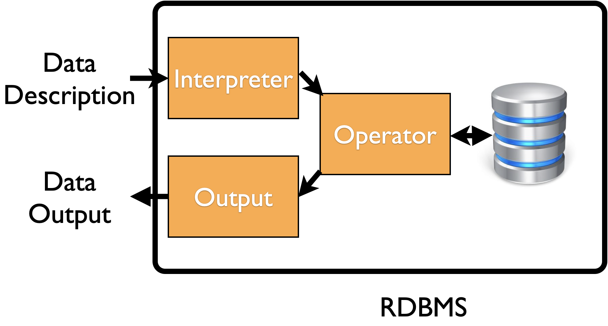

Statistical
Computing
Database
Xi (Rossi) LUO
Department of Biostatistics and Data Science
School of Public Health
The University of Texas Health Science Center at Houston
Why SQL?
- File storage don’t scale well with data size
- Database is efficient for storing regular data (tables) with
relations - Images, videos are still normally stored as files but the catalog of files is in a database
- Decades of improvements by database management systems
Operations/Transactions in Databases (CRUD)
- Create
- Read
- Update
- Delete
- Availability and Security
- Atomicity: if part of operations failed, return database to its original state prior to the operations
- Consistency: records must be valid according to rules
- Isolation: transactions executed in parallel
- Durability: once transactions committed, they should stay committed
Relational Dataabases
- Started by a paper (Codd 1970)
- Collection of multiple tables
linked by specific attributes (e.g. IDs) - Interested in relations not just individual datasets
- By normalization, data reduced to multiple tables to reduce redundancy
Example

Keys
- Primary key: uniquely identify a row in current table
- tailnum is primary key in table planes
- Foriegn key: uniquely identify a row in another table
- tailnum is foriegn key in table flights
- Variable can be both PK and FK
- PK and FK form a relation, typically one-to-many
- Each flight has one plane but one plane can serve multiple flights
Database vs Files
- Scale: most cases; super big: NoSQL, Hadoop
- Concurrent transactions: central server for multiple users
- Efficiency: slicing data, joining tables, updates...
- Robustness: backups, logs
- Multiple interfaces: R, Python, JAVA, ...
RDBMS
Relational Database Management System
- RDBMS is a system based on the relational model
- A decorative model which uses descriptive languages to locate where data are
- Give me the data on incomes of Texans, between 2019-2020, in Houston,...
- Instead of writing if person in Houston and yeear ....
- There are efficient computational algorithms (ex. trees) to extract the specific data based on the descriptions
- Most DBs used nowadays are relational
High Level Overview
Example: MySQL

Data Description: SQL
- SQL (Structured Query Language) is a language for describing the data
- Most SQL language features are universal across different implementations
- Oracle, Microsoft SQL, MySQL, IBM DB2, PostgreSQL
- The implementations mostly differ in speed, scale, stability, and user interfaces
Disadvantages
- Infrastructure
- Human resources
- Learning curve (today)
SQL
SQLite
SQLite
- SQLite is a file (serverless) DB
- Unlike Oracle, you don’t need DB servers and IT teams to run SQLite
- The SQL program language is almost the same
- Probably the most popular file DB around the world
- You rely on SQLite almost every day
- Firefox relies on SQLite for settings, history, ...
- The management software is pre-installed on MAC for example
Create
Run this in mac/linux terminal
sqlite3 test.sqlite
CREATE TABLE "test" ("serialno" integer, "RT" text, "BATH" integer);
This creates an empty table (or template)
Populate the Table
INSERT INTO test values(12, 'haha', 2);
INSERT INTO test values(55, 'hoho', 16);
Usually case-insensitive
Retrieve
sqlite> SELECT * from test;
12|haha|2
55|hoho|16
sqlite> select BATH from test where serialno=55;
16
Delete
sqlite> delete from test where serialno = 55;
12|haha|2
55|hoho|16
sqlite> select * from test;
12|haha|2
Update
sqlite> update test set BATH = 60 where serialno=12;
sqlite> select * from test;
12|haha|60
Example: HUS
Run the following in terminal
sqlite3 hus5.sqlite
sqlite> .tables
hus5
sqlite> .schema hus5
CREATE TABLE IF NOT EXISTS "hus5" ("serialno" integer,"insp" integer,"RT" text,"DIVISION"...
sqlite> select * from hus5 limit 1;
2009000000015||H|6|2100|-9|3|1|1086032|1085467|25|0|1|3||1|3|1|2|0|||||||||||1|6|||1|9|1||1|||1|5||||7|||||||||||||1|||||||||||1|||||2|||0|0|||||0|0|0|0|0|0|0|0|0|0|0|0|0|0|0|0|0|0|0|0|0|0|0|0|0|0|0|0|0|0|0|0|0|0|0|0|0|0|0|0|0|10|10|34|24|8|42|45|26|22|9|21|26|18|23|10|18|25|34|39|25|42|35|7|23|32|9|9|26|30|44|27|26|20|29|43|21|21|7|12|20|8|8|41|28|10|41|37|28|21|7|24|24|26|25|8|27|26|40|43|23|40|50|6|26|54|8|6|24|24|35|26|26|30|25|41|25|26|9|6|21
sqlite> .timer ON
sqlite> select count(*) from hus5;
7219000
Run Time: real 3.575 user 1.230715 sys 2.340997
sqlite> select serialno, BATH from hus5 order by serialno limit 10;
2009000000001|1
2009000000002|1
2009000000003|1
2009000000004|1
2009000000005|1
2009000000006|1
2009000000007|1
2009000000008|1
2009000000009|1
2009000000010|1
Run Time: real 4.132 user 1.734199 sys 2.394593
Select two variables and show the smallest 10
sqlite> select distinct BDSP from hus5;
3
2
1
4
5
0
8
7
6
9
10
14
12
18
11
19
13
Run Time: real 4.517 user 2.106608 sys 2.406503
Find unique values
sqlite> select count(*) from hus5 where BATH is '';
625632
Run Time: real 4.249 user 1.861443 sys 2.383460
sqlite> select count(BATH) from hus5 where BATH is '';
625632
Run Time: real 4.291 user 1.869714 sys 2.417507
Count missing values
sqlite> select count(*) from hus5 where BATH is '' and serialno>=2013000000000 and serialno<2014000000000;
148256
Run Time: real 4.272 user 1.866299 sys 2.402188
Count missing with conditions
sqlite> select count(*)
...> from ( select * from hus5 where BATH is '')
...> where serialno>=2013000000000 and serialno<2014000000000;
148256
Run Time: real 4.265 user 1.856958 sys 2.403541
Subquery: select to form a table
sqlite> select BATH, count(BATH) as Freq
...> from hus5 group by BATH order by count(BATH);
2|68958
|625632
1|6524410
Run Time: real 8.110 user 5.058097 sys 2.875669
List unique values and frequency
Join Tables
Inner Join
SELECT customer_name, invoice_id, invoice_date
FROM customer
INNER JOIN invoice
ON customer.customer_id = invoice.customer_id;
Return rows satisfy the join condition for both tables. E.g. one id does not exist in the other table is dropped
In Oracle, Equijoin and an Inner Join are equivalent
Left Outer Join
SELECT customer_name, invoice_id, invoice_date
FROM customer
LEFT OUTER JOIN invoice
ON customer.customer_id = invoice.customer_id;
Return all rwos from the subquery on the left, merge with the right table where no matching vablues are inserted with NULL
Left Outer Join
SELECT customer_name, invoice_id, invoice_date
FROM customer
LEFT OUTER JOIN invoice
ON customer.customer_id = invoice.customer_id;
Return all rwos from the subquery on the left, merge with the right table where no matching vablues are inserted with NULL
OUTER may be optional
Right Outer Join
SELECT invoice_id, stock_item.code, item
FROM line_item
RIGHT JOIN stock_item
ON line_item.code = stock_item.code;
Return all rwos from the right table, merge with the left table where no matching vablues are inserted with NULL
Full join: return records from both the left and right tables
Two tables: Person (PersonId: int, Firstname: varchar, LastName: varchar), and Phone (PhoneID: int, ID: int, Phone: varchar), PersonId is PK. Write SQL query to report FirstName, LastName and Phone. If Phone doest not exist, report Null.
Input:
+----------+----------+-----------+
| PersonId | LastName | FirstName |
+----------+----------+-----------+
| 1 | Wang | Allen |
| 2 | Alice | Bob |
+----------+----------+-----------+
+-----------+----------+---------------+
| PhoneID | ID | Phone |
+-----------+----------+---------------+
| 1 | 2 | 713-900-9001 |
| 2 | 3 | 713-900-9002 |
+-----------+----------+---------------+
Output:
+-----------+----------+---------------+
| FirstName | LastName | Phone |
+-----------+----------+---------------+
| Allen | Wang | Null |
| Bob | Alice | 713-900-9001 |
+-----------+----------+---------------+
SQL
select Person.FirstName, Person.LastName, Phone.Phone from Person
left join Phone on Person.PersonId = Phone.ID;
Complex Example
TaxPayer table:
+--------------+---------+
| Column Name | Type |
+--------------+---------+
| Id | int |
| Name | varchar |
| Tax | int |
| StateId | int |
+--------------+---------+
Id is primary key. StateId is a foreign key of the ID from the State table.
State table:
+-------------+---------+
| Column Name | Type |
+-------------+---------+
| Id | int |
| Name | varchar |
+-------------+---------+
Id is primary key.
Write an SQL query to find tax payers who have the highest tax in each of the states. Return the result in any order.
SQL Solution
select State.Name as State,
TaxPayer.Name as Name,
Tax
from TaxPayer inner join State
on TaxPayer.StateId = State.Id
where
(TaxPayer.StateId, TaxPayer.Tax)
in
(select StateId, max(Tax) from TaxPayer group by StateId);
Write an SQL query to find tax payers who have the highest tax in each of the states. Return the result in any order.
MySQL
Docker Setup
Run in terminal
docker pull mysql
# start the server
docker run --name mysql_server -v /Users/xluo/Downloads/file_data/PUB5/mysql_files:/var/lib/mysql \
-v /Users/xluo/Downloads/file_data/PUB5/csv:/mnt/data -e MYSQL_ROOT_PASSWORD=test -d mysql
Check if running
% docker ps
CONTAINER ID IMAGE COMMAND CREATED STATUS PORTS NAMES
7705898a700f mysql "docker-entrypoint.s…" 9 seconds ago Up 8 seconds 3306/tcp, 33060/tcp mysql_server
Connect to Server
% docker exec -it mysql_server bash
root@4c80fefdbe9c:/# ls /mnt/data/
ss13hus_all.csv
Run MySQL Client
root@4c80fefdbe9c:/# mysql --local-infile -uroot -ptest
....
Copyright (c) 2000, 2021, Oracle and/or its affiliates.
Oracle is a registered trademark of Oracle Corporation and/or its
affiliates. Other names may be trademarks of their respective
owners.
Type 'help;' or '\h' for help. Type '\c' to clear the current input statement.
mysql>
mysql> create database statcomp;
Query OK, 1 row affected (0.01 sec)
mysql> use statcomp;
Database changed
CREATE TABLE hus5 (serialno bigint,insp integer,RT text, DIVISION integer,PUMA00 integer,PUMA10 integer,REGION integer,ST integer,ADJHSG integer,ADJINC integer,WGTP integer,NP integer,TYPE integer,ACR integer,AGS integer,BATH integer,BDSP integer,BLD integer,BUS integer,CONP integer,ELEP integer,FS integer,FULP integer,GASP integer,HFL integer,MHP integer,MRGI integer,MRGP integer,MRGT integer,MRGX integer,REFR integer,RMSP integer,RNTM integer,RNTP integer,RWAT integer,RWATPR integer,SINK integer,SMP integer,STOV integer,TEL integer,TEN integer,TOIL integer,VACS integer,VALP integer,VEH integer,WATP integer,YBL integer,FES integer,FINCP integer,FPARC integer,GRNTP integer,GRPIP integer,HHL integer,HHT integer,HINCP integer,HUGCL integer,HUPAC integer,HUPAOC integer,HUPARC integer,KIT integer,LNGI integer,MULTG integer,MV integer,NOC integer,NPF integer,NPP integer,NR integer,NRC integer,OCPIP integer,PARTNER integer,PLM integer,PSF integer,R18 integer,R60 integer,R65 integer,RESMODE integer,SMOCP integer,SMX integer,SRNT integer,SVAL integer,TAXP integer,WIF integer,WKEXREL integer,WORKSTAT integer,FACRP integer,FAGSP integer,FBATHP integer,FBDSP integer,FBLDP integer,FBUSP integer,FCONP integer,FELEP integer,FFSP integer,FFULP integer,FGASP integer,FHFLP integer,FINSP integer,FKITP integer,FMHP integer,FMRGIP integer,FMRGP integer,FMRGTP integer,FMRGXP integer,FMVP integer,FPLMP integer,FREFRP integer,FRMSP integer,FRNTMP integer,FRNTP integer,FRWATP integer,FRWATPRP integer,FSINKP integer,FSMP integer,FSMXHP integer,FSMXSP integer,FSTOVP integer,FTAXP integer,FTELP integer,FTENP integer,FTOILP integer,FVACSP integer,FVALP integer,FVEHP integer,FWATP integer,FYBLP integer,WGTP1 integer,WGTP2 integer,WGTP3 integer,WGTP4 integer,WGTP5 integer,WGTP6 integer,WGTP7 integer,WGTP8 integer,WGTP9 integer,WGTP10 integer,WGTP11 integer,WGTP12 integer,WGTP13 integer,WGTP14 integer,WGTP15 integer,WGTP16 integer,WGTP17 integer,WGTP18 integer,WGTP19 integer,WGTP20 integer,WGTP21 integer,WGTP22 integer,WGTP23 integer,WGTP24 integer,WGTP25 integer,WGTP26 integer,WGTP27 integer,WGTP28 integer,WGTP29 integer,WGTP30 integer,WGTP31 integer,WGTP32 integer,WGTP33 integer,WGTP34 integer,WGTP35 integer,WGTP36 integer,WGTP37 integer,WGTP38 integer,WGTP39 integer,WGTP40 integer,WGTP41 integer,WGTP42 integer,WGTP43 integer,WGTP44 integer,WGTP45 integer,WGTP46 integer,WGTP47 integer,WGTP48 integer,WGTP49 integer,WGTP50 integer,WGTP51 integer,WGTP52 integer,WGTP53 integer,WGTP54 integer,WGTP55 integer,WGTP56 integer,WGTP57 integer,WGTP58 integer,WGTP59 integer,WGTP60 integer,WGTP61 integer,WGTP62 integer,WGTP63 integer,WGTP64 integer,WGTP65 integer,WGTP66 integer,WGTP67 integer,WGTP68 integer,WGTP69 integer,WGTP70 integer,WGTP71 integer,WGTP72 integer,WGTP73 integer,WGTP74 integer,WGTP75 integer,WGTP76 integer,WGTP77 integer,WGTP78 integer,WGTP79 integer,WGTP80 integer);
mysql> SHOW GLOBAL VARIABLES LIKE 'local_infile';
+---------------+-------+
| Variable_name | Value |
+---------------+-------+
| local_infile | OFF |
+---------------+-------+
1 row in set (0.01 sec)
mysql> SET GLOBAL local_infile = 'ON';
Query OK, 0 rows affected (0.00 sec)
Loading CSV Data
mysql> LOAD DATA local INFILE '/mnt/data/ss13hus_all.csv' INTO TABLE hus5
-> FIELDS TERMINATED BY ',' ENCLOSED BY '"'
-> LINES TERMINATED BY '\n'
-> IGNORE 1 LINES;
Query OK, 7219000 rows affected, 65535 warnings (15 min 46.61 sec)
Records: 7219000 Deleted: 0 Skipped: 0 Warnings: 178550734
MySQL Example
mysql> select distinct BATH from hus5;
+------+
| BATH |
+------+
| 1 |
| 0 |
| 2 |
+------+
3 rows in set (46.37 sec)
MySQL Files
% ls /Users/xluo/Downloads/file_data/PUB5/mysql_files
#ib_16384_0.dblwr binlog.000001 ca-key.pem ib_buffer_pool ibtmp1 private_key.pem statcomp
#ib_16384_1.dblwr binlog.000002 ca.pem ib_logfile0 mysql public_key.pem sys
#innodb_temp binlog.000003 client-cert.pem ib_logfile1 mysql.ibd server-cert.pem undo_001
auto.cnf binlog.index client-key.pem ibdata1 performance_schema server-key.pem undo_002
% ls -ahl /Users/xluo/Downloads/file_data/PUB5/mysql_files/statcomp
-rw-r----- 1 xluo staff 6.6G Oct 13 12:49 hus5.ibd
NoSQL (Not Only SQL)
- SQL doest not scale well with big data
- Speed and rise of in-memory databases
- Data that don't fit relational structure well, (e.g. tweets)
References
- R for DS: ch 10
- https://dev.mysql.com/doc/refman/8.0/en/
- https://www.sqlite.org/docs.html
- https://link.springer.com/book/10.1007%2F978-1-4471-5601-7